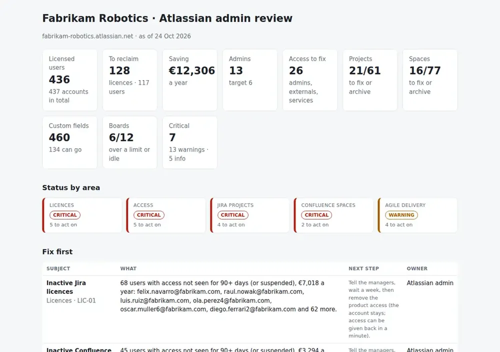

La revisión mensual de Jira y Confluence que acompaña a este post encuentra 128 licencias sin uso en su demo. Una de las causas que señala es el grupo por defecto: todo el que entra recibe Jira por él, lo vaya a usar o no. La misma ejecución detecta un sprint abierto nueve días después de su fecha de fin. La demo es una empresa inventada de robótica de almacenes con Jira, Jira Service Management y Confluence Cloud, con 437 cuentas de usuario, 61 proyectos, 77 espacios, 460 campos personalizados y 12 tableros Scrum, y los problemas puestos a propósito.
Un sitio de Atlassian crece solo. Los externos siguen con acceso cuando termina el proyecto, un proyecto de demo sigue abierto a Anyone y un tercio de los 460 campos personalizados no se ha usado en un año. Nada de esto es difícil de arreglar; es difícil de ver.
Licencias, administradores y cuentas sin dueño
La comprobación de licencias señala el acceso a producto sin usar en 90 días, nunca usado pasado el periodo de gracia o en manos de cuentas suspendidas, con el coste anual y las licencias frente a las compradas. La de accesos busca más administradores que el objetivo, administradores desactivados, inactivos o con dominios personales, usuarios externos por dominio y cuentas de servicio sin responsable con nombre. Un compañero metido en jira-admins «por un día» hace dos años es el tipo de caso que saca a la luz.
La comprobación de higiene cubre proyectos abiertos a Anyone, proyectos sin responsable o con un responsable que ya no está, proyectos y espacios inactivos para archivar, esquemas de permisos y de flujo usados por un solo proyecto, espacios con acceso anónimo o sin administrador activo, espacios personales de bajas y campos personalizados que eliminar.
Dos tableros que arrastran un tercio de cada sprint
Para cada tablero Scrum, la revisión lee los últimos seis sprints: sprints abiertos después de su fecha de fin, trabajo arrastrado, alcance añadido después del inicio, say/do, la parte del trabajo comprometido que de verdad se entrega, y tableros parados. Dos tableros arrastran un tercio de cada sprint al siguiente, cosa que nadie nota porque el tablero sigue pareciendo activo.
La salida es un informe web, admin-review.md como orden del día con las decisiones en forma de checklist, licences.csv con columnas manager_ok y removed, access-review.csv con una columna decision, y los CSV por proyecto, espacio, campo y tablero. La renovación de licencias, la revisión de accesos y la retrospectiva reciben lo mismo: una lista, la regla detrás de cada elemento y una columna para la decisión.
Cómo usarlo con datos reales
Funciona con Python y solo la librería estándar, con 17 tests y un runbook de 45 minutos que explica cómo leer los números ágiles. Un exportador de solo lectura en PowerShell cubre las API REST de Jira, Agile y Confluence Cloud, y la exportación de usuarios de admin.atlassian.com carga tal cual. Los responsables tienen una semana para objetar antes de quitar ninguna licencia.
De dónde sale
Nace de administrar Jira y Confluence y llevar la relación con Atlassian, de trabajar como Scrum Master y Product Owner, de llevar la gestión de releases por el CAB y de gestionar licencias y proveedores. El ahorro en licencias paga la revisión, pero los números ágiles son lo que interesa a los equipos: sirven para abrir la conversación en la retrospectiva, no son objetivos.
¿Quieres llevarlo a tu entorno o adaptarlo a tu caso? Escríbeme y lo vemos.
Tech Career Lab · newsletter
¿Te ha servido? Cada dos semanas envío una idea práctica para perfiles IT: LinkedIn, proyectos, networking y procesos de selección.
Apúntate y llévate las 33 ideas →